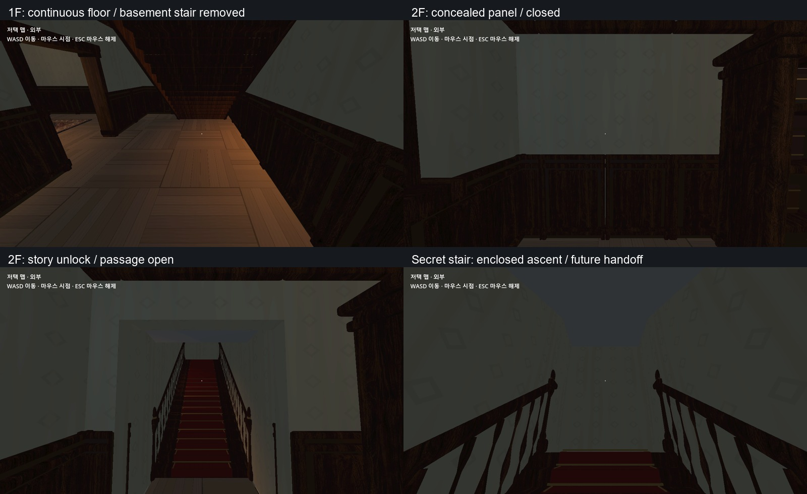

검사 결과
1·2층 27개 방 출입과 689개 이동 지점, 외피 위치 검사를 함께 확인했고 실패가 없었습니다.
완성된 씬을 실제 플레이어로 이동하고 GPU 화면으로 확인해 설계가 게임 안에서 제대로 작동하는지 검증하는 단계입니다.

1·2층 27개 방 출입과 689개 이동 지점, 외피 위치 검사를 함께 확인했고 실패가 없었습니다.
비밀계단 상단은 아직 현실 3층으로 연결하지 않고, 후속 이공간 전환을 위한 연결 지점으로 남겨 두었습니다.